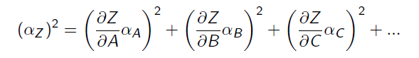

imagenes, aqui se hacen pruebas con imagenes
a continuacion unas imagenes:
imagen 1 (esta esta en este directorio):
texto despues de la imagen, no queda pegado en la imagen, lo cual es bueno.
imagen 2 (esta es global, no esta en este directorio)

Hace años, y de intento no se señala cuál, hubo en México una causa célebre. Los autos pasaban de 2,000 fojas y pasaban también de manos de un juez a las de otro juez, sin que pudieran concluir. Algunos de los magistrados tuvieron una muerte prematura y muy lejos de ser natural. Personas de categoría y de buena posición social estaban complicadas, y se hicieron, por este y otros motivos, poderosos esfuerzos para echarle tierra, como se dice comúnmente; pero fue imposible. El escándalo había sido grande, la sociedad de la capital y aun de los Estados había fijado su atención, y se necesitaba un castigo ejemplar para contener desmanes que tomaban grandes proporciones. Se hicieron muchas prisiones, pero a falta de pruebas, los presuntos reos eran puestos en libertad. Al fin llegó a descubrirse el hilo, y varios de los culpables fueron juzgados, condenados a muerte y ejecutados. El principal de ellos, que tenía una posición muy visible, tuvo un fin trágico.
De los recuerdos de esta triste historia y de diversos datos incompletos, se ha formado el fondo de esta novela; pero ha debido aprovecharse la oportunidad para dar una especie de paseo por en medio de una sociedad que ha desaparecido en parte, haciendo de ella, si no pinturas acabadas, al menos bocetos de cuadros sociales que parecerán hoy tal vez raros y extraños, pues que las costumbres en todas las clases se han modificado de tal manera que puede decirse sin exageración que desde la mitad de este siglo a lo que va corrido de él, México, hasta en sus edificios, es otra cosa distinta de lo que era en 1810.
a continuacion unas imagenes:
texto despues de la imagen, no queda pegado en la imagen, lo cual es bueno.